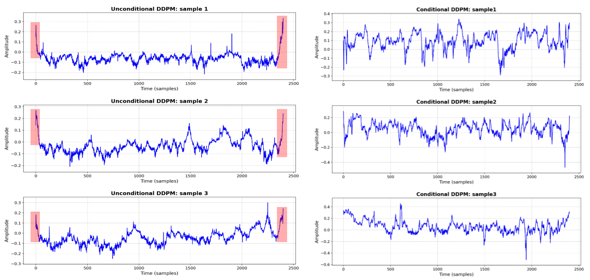
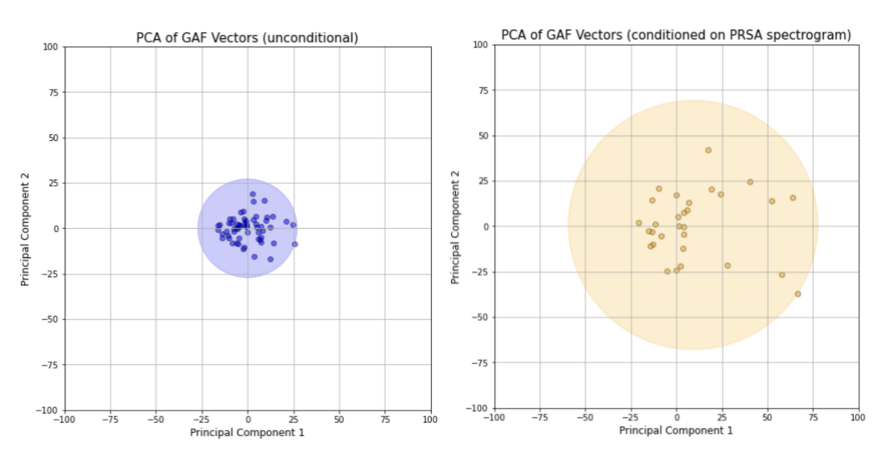

BIBM 2024
FHRDiffLeveraging Diffusion Models for Conditional Fetal Heart Rate Signal Generation
1 College of Big Data and Internet, Shenzhen Technology University, Shenzhen, China
2 National Engineering Laboratory for Big Data System Computing Technology, Shenzhen University, Shenzhen, China
3 Department of Surgery, Yong Loo Lin School of Medicine, National University of Singapore, Singapore
* Corresponding author: lvyu@sztu.edu.cn
FHR synthesis guided by a PRSA spectrogram.
Guide one-dimensional denoising with a spectrogram derived from phase-rectified signal averaging (PRSA). The paired condition provides signal-specific information for FHR generation.

- Output
- Fetal heart rate
- Condition
- PRSA spectrogram
- Generative model
- Conditional diffusion
Overview
Use physiological features to guide the denoising process.
FHRDiff generates one-dimensional FHR signals with a diffusion model conditioned on a phase-rectified signal averaging (PRSA) spectrogram. The condition is derived from a reference FHR signal and supplies information about its temporal dynamics.
The study investigates signal fidelity, distribution similarity, expert assessment, and the effect of conditioning on generated-signal diversity.
Method
- 01
Build the paired condition
Compute a PRSA curve from an FHR signal, then apply the continuous wavelet transform (CWT) to obtain a spectrogram.
- 02
Learn one-dimensional denoising
Combine diffusion-step embeddings, the spectrogram condition, and residual blocks with dilated convolutions to predict noise.
- 03
Sample an FHR trace
Start from noise and iteratively denoise under the PRSA spectrogram condition to generate a new FHR signal.
Dataset and signal preparation
Experiments use the CTU-UHB database (552 recordings, 4 Hz). The pipeline removes long missing intervals, interpolates short gaps, excludes recordings with more than 10% missing data, and detrends the signals.
Twenty-minute windows contain 4,800 points before downsampling to 2,400 points for model input.
Results
FHRDiff has the lowest RE, FD, MMD, and PRD in the paper’s comparison. CTGGAN has the lowest SWD.
| Model | RE ↓ | FD ↓ | MMD ↓ | SWD ↓ | PRD ↓ |
|---|---|---|---|---|---|
| SeqGAN | 10.324 | 0.974 | 6.527 | 0.541 | 10.635 |
| DCGAN | 9.532 | 0.795 | 5.267 | 0.254 | 10.431 |
| CGAN | 9.012 | 0.763 | 5.022 | 0.254 | 9.431 |
| FHRGAN | 8.059 | 0.682 | 1.975 | 0.086 | 5.437 |
| CTGGAN | 5.621 | 0.614 | 0.215 | 0.012 | 4.821 |
| DDPM | 7.059 | 0.682 | 6.323 | 0.521 | 9.786 |
| FHRDiff | 1.763 | 0.160 | 0.067 | 0.088 | 0.492 |
RE: relative entropy; FD: Fréchet distance; MMD: maximum mean discrepancy; SWD: sliced Wasserstein distance; PRD: percent root mean square difference. Lower is better (↓); bold marks the lowest value in each column.
What does the condition change?
The paper compares conditional and unconditional samples and visualizes generated datasets with principal component analysis (PCA). These experiments provide qualitative evidence of increased variation under PRSA conditioning.


View the PCA comparison


Expert review and evaluation scope
The paper reports an assessment of 160 generated samples by one obstetrician. Downstream classification with different amounts of synthetic training data is identified as future work; the paper does not establish a classification improvement from augmentation.
Presentation materials
The original BIBM 2024 presentation introduces the motivation, PRSA conditioning, diffusion architecture, quantitative evaluation, and conditional-generation experiments.
Original recording · approximately 16 min 13 s · 640 × 480.
Resources
Citation
Please cite the paper if you use this method or its results.
@inproceedings{li2024fhrdiff,
title = {{FHRDiff}: Leveraging Diffusion Models for Conditional Fetal Heart Rate Signal Generation},
author = {Li, Xiaoqing and Lu, Yu and Ngiam, Kee Yuan and Yu, Zichang and Furqan, Mohammad Shaheryar},
booktitle = {2024 IEEE International Conference on Bioinformatics and Biomedicine (BIBM)},
year = {2024},
pages = {2148--2155},
publisher = {IEEE},
doi = {10.1109/BIBM62325.2024.10821853},
url = {https://doi.org/10.1109/BIBM62325.2024.10821853}
}Contact
For questions about this work, please contact Yu Lu at lvyu@sztu.edu.cn.